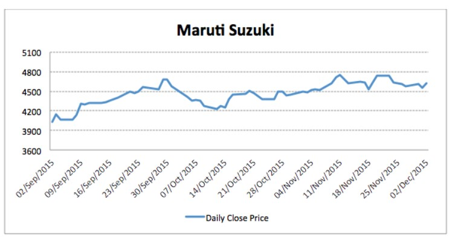
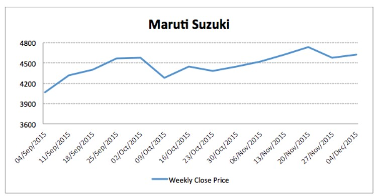
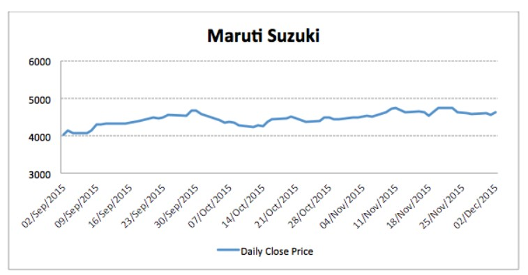
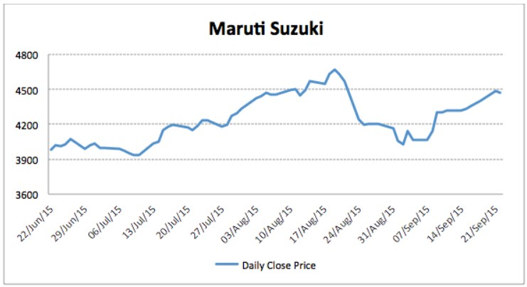
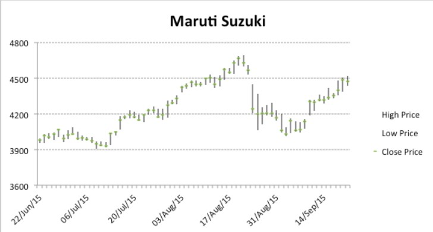
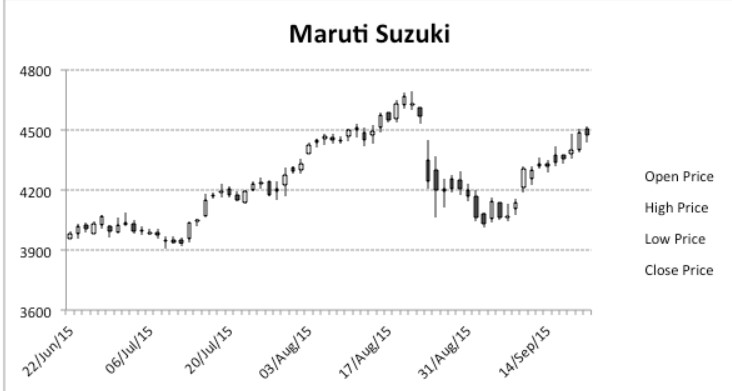

Making sense of data
Charts/graphs make data analysis and interpretation very easy. Suppose, if we give you last 5
years of daily price data of TATA motors, you cannot conclude anything just by looking at the
numbers because of the sheer volume of data. But if we make a graph by plotting this data and
then show it to you, you can easily find out what happened to the stock price near last Diwali or
which were the periods when it went up/down. Thus, understanding charts become very
important for investment analysis.
Generally, we deal with 2-dimentional charts with time on horizontal axis and price/volume/other
parameters on vertical axis. To understand what information is presented by every single point on
a 2D chart, we can drop a straight line parallel to vertical axis on horizontal axis and a straight line
parallel to horizontal axis cutting vertical axis. Suppose, the point at which line cuts horizontal
axis is x and the point at which other line cuts vertical axis is Y, then the point represents that the
price of the stock was Rs Y on X date. Horizontal axis can have different time units as smallest
interval: seconds, minutes, days, weeks etc. In a graph with smallest horizontal unit as seconds,
we would be plotting prices at each and every second. When the unit is week, we will have just
one price for every week and we would be plotting these prices for different weeks. It could be
weekly average price, last traded price or first traded price, depending on the requirement. If I
want to plot last year’s price series of a stock, and keep day as the smallest unit for time axis, I
need 365 data points to complete my graph. For the same time period, if I keep week as my
smallest unit, I will need only 52 data points, as there are only this many weeks in a year.
To make this clear, we have shown three graphs below. All graphs plot 3 months stock price
movement for Maruti. First chart uses day as the smallest unit and is constructed by plotting daily
prices for 3 months.

The second chart below uses a week as the smallest unit.

We can easily see that first chart shows more information, compared to the second one. We can
only see average price for every week in the second chart, and not what happened during the
week – whether price initially went up then came down or vice versa. In general, charts with small
intervals show more details. Just like horizontal axis’s smallest interval, vertical axis’s smallest
interval also matters a lot. In first two graphs, smallest interval for vertical axis is 300. Suppose,
instead of 300 it was 3000, then after 3900 the next point would have been 4900 directly. In this
case the whole graph will shrink, as shown in the 3rd chart.

Let’s now learn more about various types of charts.
In our last article, we learnt about construction and importance of charts in technical analysis. In
this article, we will be covering various types of charts, frequently used in technical analysis.
Before we go in details of these charts, let’s first quickly understand few terms associated with
price of a security (shares/bonds/derivatives)
Open price: price at which first trade happens, after market opens for the day
Close price: price at which last trade of the day happens. Sometimes, it’s the average price
of last few minutes
High price: highest price attained by the security, during the daily trading session
Low price: lowest trading price during the daily trading session
Line chart

It is constructed by joining various data points at different time intervals through a straight line. As
discussed in the last article, no of data points varies according to unit chosen for horizontal axis.
Below is the line chart that we discussed in our last article. It is constructed using last 3 months
daily close price and has day as the smallest unit on horizontal axis.
Bar chart

It shows a lot more information, compared to a line chart. In line chart, we joined all the data
points using a straight line. Here, we don’t join these data points. As shown in the chart below, at
each unit of time (horizontal axis), a vertical line is constructed. So for the same Maruti chart that
we plotted above, a bar chart will have 90 vertical lines for 3 months – one line for each day. Top
most point of the line shows high price of that day. Bottom most point depicts the low price of
daily trading session. Also, you can see a small horizontal dash cutting each of the vertical lines. It
represents daily close price. If we join all the points at which these small dashes are cutting
vertical lines, we will again get the line chart that we discussed in our previous point. Apart from
high, low and close price information, there is one more very important thing that bar charts
convey. The length of each vertical line shows the extant of daily price movement. If the length is
very high for a particular day, it means that there is big difference between highest and lowest
prices attained during that day’s trading session. Thus, a stock would have experienced high
volatility in that trading session.
Candlestick chart:

As discussed in the previous point, bar chart shows information about high, low and close prices.
In addition to this, a candlestick chart also shows information about the open price. Again, a
vertical line is placed for each of the data point. So if we are using day as the smallest unit on
horizontal axis, we will be adding one vertical line for each day. Similar to bar chart, top point of
the vertical line will depict high price and bottom point will depict low price. But instead of dash,
now we add a bar on top of the vertical line, as shown in the chart below. These vertical bars can
be hollow/white or filled/black. A hollow bar tells us that close price is higher than the open price.
In this case, upper end of bar chart will show close price and lower end will show open price.
Length of the bar will depict difference between open and close price, while length of the line will
depict difference between high and low price. On the other hand, a filled bar represents a
scenario where close price is less than the open price. Here, lower end of the bar will show close
price and upper end will show open price. Thus, upper and lower end of bars always represents
close and open price, but which will depict what depends on whether it is filled or hollow.
There is a lot more information conveyed by a candle chart, apart from the four price points that
we discussed. Let’s take an example. Suppose everyday there is a fight between a bull and a bear.
All the information about this daily fight is conveyed using a candlestick chart. In this case,
following would be the interpretation of different characteristics of a candle chart
If bull wins the daily fight, it is represented by a hollow bar
If bear wins the daily fight, it is represented by a filled bar
The intensity of the fight is represented by the length of the line
Length of the bar represents margin by which either one wins
Now suppose bull means buyers in the market and bear means sellers. Every trading session is a
fight between buyers and sellers. If buyers win, stock price increase and close price is above the
open price. Thus, we get a hollow candle. It shows that buying pressure on the stock was much
more than the selling pressure, and length of the bar represents extent of difference. If sellers win,
it means selling pressure was more during the trading session and closing price would be less
than the open price. This would be represented by a filled bar. If we are continuously getting
hollow candles, in our example this would mean bear has become weak, as it is losing every day.
Similarly, in real life it would mean that buyers are outnumbering sellers and there is strong bullish
momentum in the stock. Opposite will happen in the case of filled candles.